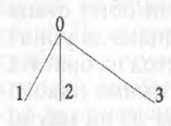
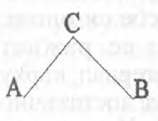

Беседа 3640 от 3877 · Беинса Дуно
Основен тон
Отче наш
Изгрява вече ден тържествен
Движенията като правим към север, оттам се възприемат силите, от юг се обработват. Винаги човек трябва да бъде във външен и вътрешен контакт. (Направихме упражнението с ръцете. Ръцете настрани, трептене на дланите – туй е изтръсване от всичкия земен прах. Обливане).
Майките ви са предали само теорията на живота. Да живее човек това е наука. Да предполагаш как ще живееш, това е теория. Между теория и наука има голяма разлика. Някои казват, че от теорията се е образувала науката. В Природата не е така. В Природата процесът е обратен. Науката е това, което живее. Един факт ти го знаеш. Ние имаме научни факти. Долната част на челото, дето са веждите, е границата на умствения свят. Там са събрани данните. Фактът е туй, което човек е преживял. По средата на челото се намират известни способности, които събират, наричам ги способности на трансформиране енергиите в Природата. Горната част на челото, разсъдителната част, е, дето са поставени принципите на живота. В горната част са принципите, в средната част са законите, в долната част са фактите. Веждите представят фактите, средната част – законите, а пък горната част – неговата разумна страна, представят принципите. Сега ако един човек не знае как да обобщава фактите, за да ги обобщи, трябва да има закони да ги събере в едно цяло. То е тъкане на работата. Той има принципи, които са Божествен материал, който се дава.
Аз искам да събудя във вас побуждение, не състезание. В състезанието се ражда ревност, в ревността се раждат много неестествени работи. Съревнованието в Истината е да пееш хубаво, да не се покажеш, че можеш да пееш, но онова, което Бог е вложил в тебе да го проявиш. Онова, което Бог е вложил в нас, трябва да го проявим. Има една човешка страна, аз я наричам позлатяване. Позлатеното никога не изтривайте, не трийте туй, което е позлатено, него само мийте отгоре малко. Туй, което е съществено, него изтривайте. Колкото по-добре изтривате, по-хубаво става. Колкото и да го изтривате, то не се изтрива. Казвам: изтривайте калта на вашия ум и на вашето сърце, защото там се събира кал. Тия лампи, след като горят години, почерняват, има остатък в горенето, не е съвсем пълно. Човек като мисли, остава известен прах в неговия ум, в сърцето му, понеже горене има там, огнище има, доста пепел се образува. В тялото доста бунище остава. Те са огнища на разни състояния – недоволство, болести, какво ли не.
Във всинца ви трябва да има желание да бъдете красиви, защото външната красота е израз на Истината. После всички трябва да бъдете подвижни. Любовта дава живот. Човек, който седи заспал, той не знае какво нещо е Любовта. Ако сърцето ви не гори, ако умът ви не издава този Божествен пламък на светлината, ако Истината не внася във вас сила, тогава вие не сте във връзка с културната работа на Земята. Като се движи човек, да му е приятно, че се движи. Сега вие по някой път очаквате нови неща, искате да изядете една паста, или едно грозде искате да го изядете. Хубави работи са. Колко грозде ядете, колко пасти ядете. Ако не знаете да ядете гроздето и ако не знаете да ядете пасти, какво ще се ползвате. Ледената вода не я разтопявайте в устата, но разтопете я в огъня, че тогава я пийте или най-малко оставете я на Слънце да се разтопи. Има едно знание, което изстива човека. То се дължи на човешкото. От това знание са пострадали висшите същества и те сега ни спъват – много възвишени същества, на които се дължат нашите страдания. Те са като големи блокове, в тях има страшна ревност. Те не искат да видят човечеството малко напред. Като видят някой човек повдигнат, веднага казват: „Какво искаш, вие сте още базбазънци, какво мислите вие?“ По някой път вие се поддавате на техните внушения. Навсякъде ги има: и в музиката, и в литературата, и в дома. Навсякъде дигат скандали. От тях трябва да се пазите. Единственото средство е Любовта, която може да го пази. Броня е тя. Не може да се избавим от лошите мисли, те ще дойдат. И от лошите желания и от тях не можем да се избавим, и те ще дойдат. И лошите постъпки и те ще дойдат. Трябва да знаем как да ги използваме. Злото трябва да се използва.
Ще ви приведа един малък анекдот, анекдоти не съставят наука. В един манастир живеел един много благочестив калугер, като светия. Един [дух] хвърлил око на него. Казва: „Вдига гюрултия в този манастир“. Влязъл в стомната, че като пие вода калугерът, да влезе в него, да го управлява. Калугерът направил един кръст и го затворил в стомната. Пил вода, но той не може да излезе из стомната. Не само това, но десетки години като пил този светия, възседнал стомната и ходил по света, че разнасял този дух по света. Десет години го възсядал. Духът бил майстор и казва на светията: „Десет години тази стомна не съм мил, да ида да я умия.“ Като умил стомната, излял водата и напълнил стомната. Заминал си, но като се връща намира едно дете, много красиво вътре в коритото. Казва: „Кои ли хора са оставили това детенце?“ Пък този дух от стомната се превърнал на дете. Калугерът взел детето и го възпитавал в манастира. И той станал калугер. Синът учи баща си: „Защо седиш тук да си губиш времето в тия дивотии. В света излез, да бъдеш полезен. Аз в туй отношение мога да ти помогна. Че ти си способен да станеш царски зет, да се ожениш за царкинята. Този народ може да го управляваш.“ Убедил го и тръгнали. И действително сполучил да го сгоди за царската дъщеря. Той му крои келяф* на него. Станало една голяма кражба в двореца. Той казва: „Зетят, който още не е станал зет, той е откраднал.“ Хващат го и намират откраднатите работи у него. Осъждат го на смърт. Той казва: „Не бой се, аз ще те избавя.“ Завеждат го да го бесят на въжето. „Гледай надалече“. – „Гледам“. – „Какво виждаш?“ – „Виждам три магарета идат“. – „Гледай още, какво има“. – „Натоварени са с цървули“. – „Още гледай“. Той гледал. „Всички са скъсани цървули“. – „Тия цървули ги скъсах, докато те докарам до това въже. Да знаеш, че аз съм по-майстор от тебе“. Една мисъл, едно желание, една постъпка, която тебе ще те окачи на въжето в края, то не е Божествено нещо. Божествените работи започват от малките, скромни са те и завършват добре, като един малък плод – цъфне, завърже, увеличава се, като стигне своята степен на развитие, узрее. То е Божественото.
Казвам: във вас два живота вървят – един бурен живот и един Божествен. Вие роптаете, че нямате апартамент, че къща нямате, въглища нямате, пари нямате достатъчно, защо сте изоставен от другите хора. Да имате ропот вътре, то не е Божествен живот. То е животът на тия падналите ангели. Казват: „Ти си способен човек, тебе Господ те е пренебрегнал и Той е пристрастен“. Ти казваш: „Я кажи какво казвате?“
Ходил един турчин в Цариград, той бил от Делиормана, връща се пак. Това било в турско време. Ходжата го пита: „Какво говорят в Цариград, какво ново има в Цариград?“ Казва: „Решили са да те направят шехю-ислям.“ Шехю-ислям е голям пост, като патриарх. „Така чух“. – „Ти ме забавляваш“. След две седмици ходжата среща турчина и пак го пита: „Я ми кажи, какво говорят в Цариград?“ Пак иска да му каже, че искали да го направят шехю-ислям, макар че не е вярно.
Бъдете свободни. Човек в света трябва да се радва на страданието и на радостта. Да се радваш на радостта, това е лесно, но да се радваш на страданието, това е изкуство. Този, който е достигнал до съвършенство, той може да се радва на страданието, на скърбите, защото скръб на един е радост на друг. Майката, която страда, носи онова дете в утробата си – за нея е страдание, пък някой път може да ѝ коства живота, но за детето, което майката го носи, е едно благо. Ако едно дете е в утробата на една отлична майка, ако тя го роди, то онаследява нейното благо. Сега знайте, че страданието е майка, която ражда. И вие роптаете против вашата майка. Докато те износи, тя страда. Туй страдание, което имате, то се дължи на майка ви, която ви носи в утробата. Защо страдам? Майка ви ви носи в утробата си. Да носиш едно дете в утробата си, не е лесно. Давам ви понятие за страданието. Майка ви страда. Нека да ви носи, като ви роди, няма да скърби, тя ще се радва. Докато майка ви скърби, да знаете, че вие още не сте родени. Като ви роди майка ви, тогава ще имате по-малко страдания. Като се намалят страданията, вие сте родени. После ще имате малко страдания, тя ще ви кърми. Като станат още по-малко, ще ви праща на училище. Като започнете да принасяте нещо на майка си, тя ще започне да се радва с вас наедно. Казвам: вие трябва да се развиете, да направите вашата майка малко щастлива, да се радва с вас. Духът, който живее във вас, да се радва, че вие оценявате ония блага, които Бог ви е дал.

ЛЮБОВ КЪМ ЕДНОТО
ЛЮБОВ КЪМ МНОЖЕСТВОТО
Много хора като се стремят към един предмет, ражда се Доброто и злото. Едното като се движи в множеството, то е Божественият принцип. За да избегнем злото, трябва да оставим Бога да действа в нас. Когато ние дойдем да действаме в Бога, ражда се злото. Когато Бог действа в нас, ражда се Доброто. Много хора, като любят едного, не разбират този принцип, ражда се състезание. Множеството като обича само едного, ражда се злото. Множеството като обичат всички, ражда се Доброто в света. Следователно, когато някой казва: „Аз обичам едного“, непременно, като обичаш едного, Доброто и злото ще се родят. Ако искате да избегнете този закон, трябва да обичате всички. Понеже Бог, Който е всеблаг, обича всички еднакво. Ние, които не сме съвършени, обичаме само едного. Щом обичаш едного, непременно ще се роди злото. То е повод за злото. Това ви казвам, за да знаете, защо трябва да обичаме всички. Като се стремиш да обичаш всички, ти се стремиш да изпълниш Волята Божия. Като се стремиш да обичаш само един човек, ти създаваш условия за злото. Ако любиш Бога, Който люби всички, ти си на правия път. Ако обичаш само един, когото Бог обича, тогава ти ще родиш злото. Ако обичаш Бога, Който е извор на всичкото Добро в тебе, Любовта ще се роди. Ако обичаш едного, когото Бог обича, има опасност и други да го обичат и да се зароди между тях злото. Тогава и в семейството имаме същото. Яков имаше 12 сина, но обичаше повече единия син. Тази обич стана причина да се роди злото. Братята без малко щяха да убият брата си. Бог го прати в Египет да стане спасител на братята си, да ги примири. Сега всички казвате: „Да имаме някого да обичаме“. В душата си обичайте Бога, за да ви научи как да обичате всички. Да обичаш един човек не е лесна работа. Най-трудното нещо е да обичаш, защото този човек, когото обичаш, той има известни умствени стремежи и ти трябва да ги познаваш. Той има известни сърдечни стремежи и ти трябва да ги познаваш. Той има и душевни стремежи и ти трябва и тях да ги познаваш добре, да работиш за неговото повдигане. Ако ти го спънеш някъде, ще направиш пакост. Вие всички вземате мястото на Бога. Бог никога не спъва хората. Едно нещо помнете – когато намислиш да направиш зло, Той ще ти каже: „Не прави това зло“. Три пъти само ще ти каже, няма да предотврати, защото ще наруши закона на свободата. После ти ще понесеш последствията. Ако искаш да направиш Добро, Той ще ти каже: „Направи Доброто“. Ако се откажеш да го направиш, пак ще страдаш. Казвам: ако те насърчи в Доброто и ти не го направиш, ще страдаш. Ако ти каже да не правиш злото и ти го направиш, пак ще страдаш. Намислиш да правиш зло. Господ ще ти каже: „Не го прави!“ Ако ти се откажеш, ще се радваш. В туй, което Бог ни насърчава, ако се откажеш, ще страдаш. И в туй, в което Бог ви спира, ако го направиш, пак ще страдаш.
Казвам: в съзнанието вие не сте господари. Аз гледам някои сте много нетърпеливи. Някъде се развива някоя реч, някой говори, някой дига ръка, иска и той да говори, ще протестира нещо. Всички протестират. Най-после казват: „Ние го нарязахме хубаво“. Щом се нареже един човек, какво изкуство има? Като нарежеш месото, какво изкуство има? Хората сготвят ядене. Мислите ли, че онова месо, което е развалено, като се нареже хубаво, че се сготви, е хубава храна. Най-първо месото трябва да бъде здраво. Ако една мисъл, едно чувство, една постъпка не съдържат в себе си онази Божествена сила, от която ти се нуждаеш, ти и да го режеш, нищо няма да ти помогне.
Та казвам: всяка мисъл, която образувате във вашия ум, гледайте да бъде чиста. Всяко чувство, което се ражда във вашето сърце, трябва да бъде чисто. Всяка постъпка да бъде чиста. Може да кажете: „Живейте добре.“ Но знаете ли как се живее добре? Да живееш добре, трябва да имаш храна. Да живееш добре, трябва да дишаш. Да живееш добре, трябва да чувстваш. Ако не знаеш как да възприемаш храната, ако не знаеш как да приемеш водата, ако не знаеш как да приемеш хубавите мисли, чувства, тогава не можеш да живееш добре. Казваме сега: „Вярвайте в Бога“. То е едно заблуждение. Двама светии живели в един манастир, имали две различни веруя. Единият поддържал, че трябва да се туря сол в боба, другият поддържал, че бобът не трябва да се соли, той си е осолен. Туй в света го има. Религиозните хора и без да работят, мислят, че ще им дойде отнякъде. Други поддържат, че като работиш, ще дойде благословението. Един ден единият сварил боб и го осолил. Друг ден другият сварил боб и го оставил неосолен. Другият казва: „Бобът не е осолен. Осоли го“. – „Помисли, че е солен и ще стане солен.“ В света само онова, което човек работи, приема благословение. Има вложени умствени заложби, сърдечни заложби и душевни заложби. Като работим върху тях, придобиваме нещо. Ако ти не можеш да кажеш една хармонична дума някому, ако кажеш една обидна дума, тази дума ще се върне към тебе. Има отзвук на нещата, отражение. Ако кажеш една лоша дума, ще се върне върху тебе; ако кажеш една добра дума, и тя ще се върне върху тебе. По този закон лошите мисли се връщат върху нас и добрите мисли се връщат върху нас. Не можем да избегнем последствията. Затова трябва да се пазим. Каквото и да посаждате, да е Добро. Човек, който много знае, не умира ли? Защо ти е знание, което те уморява? Малко да знаеш, но да живееш. Толкова много да знаеш, че да умреш. Аз считам многото знание като товар. Що ти са сто кила да ги носиш на гърба си. Колко кила може да носиш? Едно кило, две кила може да носиш, но сто кила ако носиш, ще ти стане толкова тежко, че ще се откажеш от него. Определено е на човека колко ядене му трябва – колкото може да побере стомахът. То е раница. Не туряй в стомаха повече, отколкото може да носиш. Никаква друга раница на гърба си. Малко ще туриш и в ума си. Малко мисли са достатъчни. Не се товарете с много мисли. Ти вървиш по пътя, малко мисли тури. Малко чувствания тури. Не туряй много чувства. Някой казва: „Аз много ви обичам, готов съм да се жертвам.“ То са празни работи.
Тук преди 30-40 години седят в кафене „Македония“ двама души и говорят за братство, равенство, за социализъм. Гледат – един се мъчи да си вдигне товара. Казват: „Нека да си вдигне товара.“ За братство и равенство говорят, но не помагат на човека. Братството и равенството там седи. Този човек има нужда, помогни му да тури раницата на гърба си. Ние проповядваме за Господа, за Любовта, ти не искаш да направиш една малка услуга. Носиш една кошница с ябълки и круши, едно дете минава и не ти се откъсва да му дадеш. Този човек може да е светия, но не е от първокласните светии. Аз считам първокласен светия, който излезе с пълна кошница и се върне с празна кошница. Който светия занесе пълната кошница пълна, не е още светия. Казвате: „Какво ще стане с нас? Ако всички носим пълни кошници, какво ще стане с нас?“

Преди няколко време тук един наш приятел беше довел една виртуозка. Аз исках да свири. Не иска да свири, че десет години не е свирила, извинява се. Взех цигулката и изсвирих само едно малко парче. Тя се страхува. Като изсвирих малкото парче, тя ми свири близо един час и повече от Бетовен, от Моцарт, от Бах. Като изсвирих малкото парче и тя започна да свири. Турете в млякото малко подкваса. Или казано на обикновен език: вложете Любовта като подкваса и всичко онова, което желаете, то ще стане. Нещата хармонично стават само по закона на Любовта. Аз свиря и на нея казвам: „Ето аз свиря. Малко свиря, но хубаво“. „Ако е за свирене – казва тя – и аз мога да свиря и по-сложно“. Че един кон може да бяга повече от мене, не показва, че той е по-умен от мене. Че един аероплан може да хвърка по-бързо или един трен може да се движи по-бързо, то е механическо движение. Аеропланът, който се движи с голяма бързина, благодарение на човешкия ум се движи.
Та казвам: Бог е направил света. Ние не трябва да се заблуждаваме. Ако Бог е вложил някакви дарби в тебе, трябва да знаеш, че силата се дължи на тази дарба, която излиза от Бога. Трябва да го съзнаваш в себе си. Ако Бог ти дал власт и всички тия хора те обичат, трябва да знаеш, че те те обичат заради Него, не заради тебе. Тебе те обичат дотолкоз, доколкото ти си готов да изпълниш Волята Божия. Следователно не можете да бъдете обичани, ако не обичате Бога. Ако вие обичате Бога, и вас ще ви обичат. Ако не Го обичате, и вас няма да ви обичат. Степента, доколко ние обичаме Първото Начало – да съзнаваме в себе си онова, което Бог е вложил. Така не могат да се раждат противоречия, понеже в ума има достатъчно материал, върху който човек може да работи. В сърцето има достатъчно материал, върху който човек може да работи. И в душата има изобилен материал да се работи. Всеки един човек трябва да работи в себе си върху онова, което Бог е вложил. Неговото бъдеще зависи от работата.
Сега в музиката си има правила. Има обикновени правила, по които се пее. За големите песни си има голямо време, за малките песни има малко време. Ако туриш малкото време при големите песни, не е хармонично. Ако туриш голямото време при малките песни, пак не е хармонично. Ще туриш голямото време при големите песни и малкото време при малките песни. Има една песен „Изгрей, изгрей ти, мое Слънце.“ Как бихте я изпели по правилата на музиката? Може да я изпеете. Но един, който разбира музиката, ще я изпее по един начин. (Учителя изпя песента изразително и отривисто. После я изпя, както я пеем обикновено.) Какво се добива при едното и при другото пеене. Ха, да видим може ли и вие да я изпеете! Не туряйте голямото време за малката песен. Ето една погрешка, вие като пеете, искате в пеенето да вземате повече. Музиката е нещо безкористно. Много добре е, че искаш да вземеш, но всяко нещо ще оцениш. Като пее, човек трябва да мисли върху пеенето и с ума си, и със сърцето си, и с душата си. Изпях песента алегро. Анданте как ще се изпее? (Учителя изпя песента на нова мелодия.) Вие се стеснявате. Когато някой иска да пее, иска да се покаже, че пее хубаво. Аз считам хубаво пеене, когато изразяваш една Божествена идея. Аз се радвам, че другите хора се ползват. Когато пеят другите, аз да се ползвам, но и когато аз пея, да се ползват другите. В пеенето трябва да бъдете свободни и да се приобщавате един към друг, защото без пеене работите не вървят. Казваше ми един наш приятел, който беше в затвора: „Никаква музика няма там, не дават да се пее“. Казват: „Ще мълчите.“ Някой е болен. Накарайте болния да пее. Имаме един наш брат, който страда, музикант, хем капелмайстор, лежи и мълчи, не пее. Като здрав пееше. Той не знае, че в пеенето е лекуването. Ти като болен ще пееш, нито повече. Ако аз съм лекар, ще карам болните да пеят, нищо повече. Ако пеят, по-малко хора ще умират; ако не пеят, по-лесно ще умират. Ако пее, не умира. Ако пеете, ще имате по-хубави мисли.
„Там горе в планината, аз зная малко изворче. От години то иска да стане. Кой как мине, то си пее: „Като мене друго изворче тук в планината няма.“ Как бихте го изпели туй: „Там горе в планината аз зная малко бистро изворче. То от години пее, че като него друго изворче там в планината няма.“ Малко дисхармония има, като се разместят думите. Те трябва да се нагласят. Музиката трябва да се нагласи според дисонансите в поезията. Има доста дисонанси в поезията.
Старите песни са доста съдържателни. Песните искат заучаване. Казваш: „Горе Слънцето“. Когато изгрее някое Слънце, как пееш? Туй слънце служи на голямото Слънце. Всяка една Божествена мисъл, всяко едно Божествено чувство е като Слънцето, което носи светлина. Ти ще го приемеш добре. Как бихте изпели тази песен? Ако не сега, за идния път. Като идете при Райската врата, как ще пеете първата ваша песен? Ще ви накарат да пеете: „Аз мога да любя“. Тогава като идете, ще ви кажат: „Изпейте: „Аз мога да любя, добър да стана.“ Как ще я изпеете? Аз направих някои корекции. Тъй, както я пеете, е доста хубаво. Аз толкоз години се занимавам с музика, но с песента на Любовта, още не съм се занимавал. Тя е една от най-трудните песни, които държа за най-после. Ще я пея един ден, но е рано. Лесно може да се пее: „Там горе в планината зная малко бистро изворче“. Човек, ако знае да пее, той ще се обнови, ще стане като малко дете. Ние сме натоварени с един много неестествен живот – седиш и в себе си имаш хиляди недоволства. Като погледнеш миналия живот, там едни неприятности има, други неприятности, синове, дъщери, как ще пееш. Но някой път считам да те накарат да си изуеш обущата и да те накарат да минеш по някой път с остри камъни, начупени камъчета, и като минаваш, да пееш. Трябва да бъдеш много добре обут, за да пееш. На земния живот защо не му пеете, какво му е лошото? Трябва да бъдеш много добре обут, за да пееш. Като вървиш по такъв каменлив път, ще си нараниш краката, мъчно се пее. Сега вие да павирате вашите пътища с ума си, че като вървите по тях, да можете да пеете. Не може човек да пее, докато не мисли, че всичко, каквото Бог е създал, е Добро. Щом влезеш в Божествения свят, може да пееш. Щом си извън Божествения свят, много мъчно се пее. Песента е най-добрият разговор, който може да имате. Оперното пеене е кряскане. То е диващина, като кряскат. Диващината ето в какво се разбира. Искат да покажат, че съдържа нещо много. Напъват се, искат да покажат, че обичат – знаеш, че моето сърце ще се пукне.
Всеки от нас е по едно малко изворче, което иска да стане голямо, че като него друго да няма. Като пее, може да не стане, но се трябва да пее. Между дърветата малкото изворче трябва да слезе, да пее, да направи някаква услуга.
Когато човек вземе тонът „фа“ правилно или не го вземе правилно, лицето огрубява, натоварва се. Когато не вземе правилно „сол“, не се разцъфтява, лицето погрознява. Когато не вземе „ла“ правилно, започне да гние. Ако „ре“ вземеш правилно, едно движение в живота ще вземеш. „Ре“ е псевдоним. Тия трептения на „ре“ образуват потик на правилното движение. Има едно движение. Някой път потик имаш да ходиш и ти е приятно, като ходиш. То е „ре“. Имаш желание да излезеш из условията, в които живееш, то е „до“. Когато в детето се ражда желание да стане гений, то взело правилно „до“. Гений значи добре е родено. Второто, когато „до“ е талантливо и когато обикновено се взема „до“, то е обикновен човек. Колкото това „до“ се взема по-фалшиво, толкова тия деца се раждат по-фалшиви. За да посееш нещо, да родиш, да се роди някаква мисъл, „до“ трябва да се роди по Божествено. Всяка мисъл е гениална, всяко чувство е гениално, всяка постъпка е гениална, ако ти вземеш този Божествен импулс. Ако ние не вземем този Божествен тон, и работите не може да се предадат. Трябва да ви пея, за да разберете какво е хубавото пеене. Може да ви говоря, колкото искате, теории за музиката. Само туй, което чуеш, което възприемеш с ухото си, то е авторитет. Туй, което аз пея, то е вярно. Туй, което ти развиваш в себе си, то е вярно. Даже онзи, който не знае да пее, като му пеят хубаво, казва: „Хубаво пее“. Не се нуждаем от някаква критика. Но всякога, когато минавате покрай някой извор, който шумоли, вслушайте се. Когато минавате покрай някои дървета, като шумолят, вслушвайте се. Ще видите – в шумоленето на вятъра има гениална работа. В шумоленето на извора има гениална работа. В пеенето на птиците има много хубаво нещо. Казвам: цялата Природа отвън има един Божествен потик. Ние върху него не обръщаме внимание, на този потик, а когато дойдат дисонансите в Природата, тогава слушаме: бурята, вятъра, трескавиците, земетресението. Те са към друга гама. А пък новото в света трябва да дойде по закона на музиката. Да имаш „до“, трябва да се роди една хубава мисъл. За да тръгне тази мисъл, пей „ре“, „ре“ трябва да вземеш правилно. Да се разклони тази мисъл, да намери своята почва, „ми“ трябва да вземеш. Да придобие корени, да ги пусне и да придобие сокове, да расте, то е „фа“. Да може да цъфне, то е „сол“. За да узрее плодът, трябва да вземеш „ла“. Да стане ароматен, да привлече хората, трябва да вземеш „си“. Ти вземеш участие. Тъй както се разбира музиката, има приложение в живота. Тъй както сега я разбират, няма приложение. Някой път някаква мисъл иде. Ти вървиш, спри се върху „до“ по един начин, по-високо или по-ниско, докато дойдеш до онзи основен тон, който ще даде потик. Най-добрият потик е „до“. Потикът за всяко нещо, което имаш, като извор, което извира, то е „до“. Туй, което дава, то е „до“. Реката, която е тръгнала, е „ре“. Ако изворът много хубаво пътува, че причинява полза на всичките растения, то е „ре“. Като се разклонява, е „ми“. Тия са възможностите.
Вие седите и мислите: „Остаряхме. Какви ще бъдем в следното прераждане?“ Вие за следното прераждане не мислете. Един Божествен ден е хиляда години. Вие сте родени в един ден. За хиляда години може да се раждате много пъти, но денят ще бъде един. Този ден е хиляда години. Казва Христос: „Иде ден, когато не може да се работи“. Сега ти си дошъл на Земята и гледай да не умираш. Вие само ще станете невидими. Лошо ли е човек да стане невидим. Сега хората правят опити да стават невидими. В плът е човекът и пак го не виждаш. Онези, които заминават за другия свят, са научили това изкуство – оставят дрехата си и те стават невидими. Стават невидими. Защо? Понеже няма обич. Всякога в духовния свят, за да видиш някого, ти трябва да го любиш и да го обичаш. Без Любов и без обич ти никого не можеш да видиш. Без Любов никого няма в Небето, нито едно живо същество. Щом любиш и обичаш, веднага светът ще се насели. Ангели ще видиш. И Бог ще видиш. Аз ви проповядвам Любовта, с която може да видите всички Божии дела без разлика и между гениални, и талантливи, и между обикновени, и между грешници. Който има Любов, не вижда нищо лошо. Турете тази основа, вие имате тази основа. Поддържайте основата на Любовта и всичко ще видите. Без Любов и без обич никакво ясновидство няма. Без Любов и без обич никаква гениалност в света не може, никаква талантливост не може. Здравословното състояние зависи от Любовта. То е практическото приложение. Защо трябва да любите? Здравето е в Любовта, светлината е в Любовта. Тия работи вие ги знаете. Казвате: „Защо трябва да го обичам?“ Ще го обичаш, за да се прояви Бог. Като обичаш някого, ти вършиш Волята Божия. Не мислете, че ти като обичаш, вършиш своята воля. Обичаш го – вършиш Волята Божия. Любиш го – вършиш Волята Божия. Защо трябва да го обичаш? Вършиш Волята Божия. „Той е задължен да ме обича“. Бог чрез него изявява Любовта си. Когато ние изявяваме Божията Любов и Божията обич, тогава Бог се весели, пък ние се радваме. За да се весели Господ, ние трябва да проявим Неговата обич и Неговата Любов. Той се весели, че ние проявяваме Неговата Любов такава, каквато е. Прославя се и Неговото Име. Само чрез Любов Името Божие се прославя. Дето обичта царува и дето Любовта царува, Той се весели. Само тогава ние може да се радваме. Трябва да образуваме Божествената атмосфера, дето Господ да се весели, пък ние да се радваме.
Пазете едно правило: от едно малко невнимание се раждат много лоши работи. Представете си, че отивате при един извор, който изтича. Всеки иска пръв да вземе. Щом идете при извора, отстъпете, не вземайте първото място. Не бързайте. Ако иска някой, нека дойде. Като няма кой, турете стомната и налейте. В Новото Учение излезте и вземете последното място, за да бъдете първи. Който иска да бъде пръв, ще остане последен.
Добрата молитва
5-та лекция от Учителя, държана на 21.Х.1942 г. сряда 5 ч. с., Изгрев.